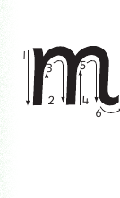

Lesson 11: Letter m
Lesson 11
Letter m
Draw, identify, or describe the pattern for the letter m; explore a teacher-provided raised-line version before answering.

Trace or finger spell the letter m; explore a teacher-provided raised-line letter model before answering.

Copy or finger spell the letter m using the writing lines, keyboard, or braille.